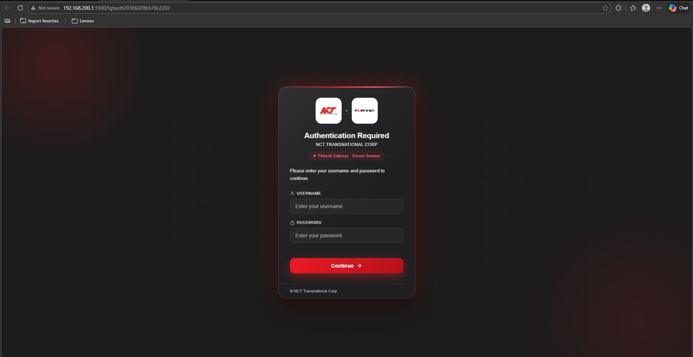
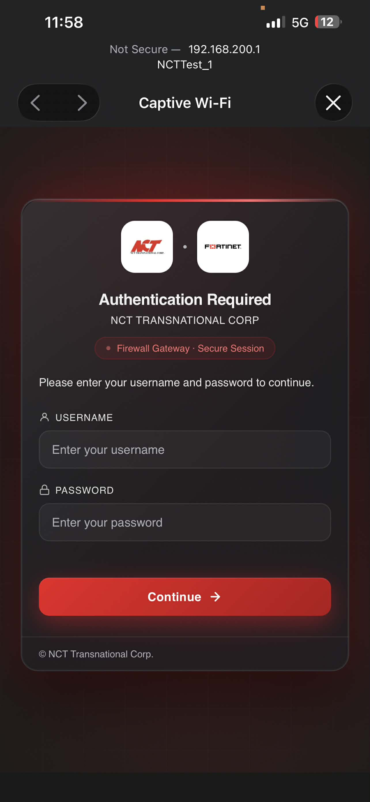

Captive Portal Authentication
Documentation of the Captive Portal login interface implementation. Below are the responsive views for both desktop and mobile devices.

Desktop View

Mobile View
OJT Developer Portfolio
Documentation of the Captive Portal login interface implementation. Below are the responsive views for both desktop and mobile devices.

